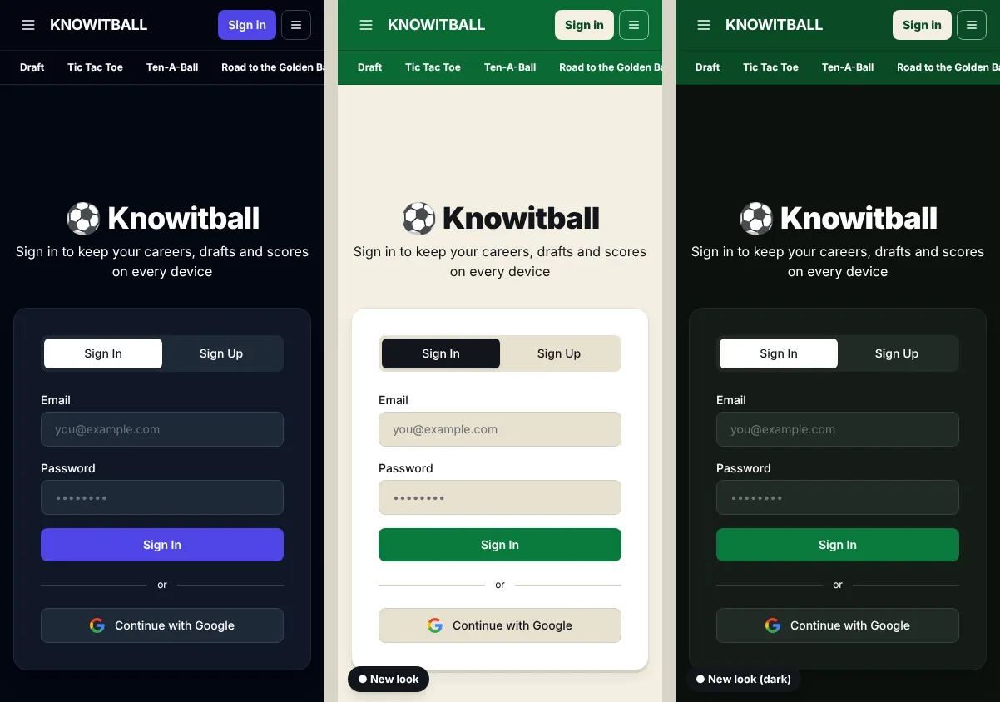

The new look, on the real site, only for you
A secret admin switch: turn it on and every public page shows the new Knowitball look (the home’s cream and green, or a dark version). Everyone else sees today’s site. This is step 1 of the whole-site plan; the page-by-page polish, the old games and Draft come next, all behind this switch until you say go.
Made by Leo · 26 Nov 2026
WHAT YOU ASKED FOR
“Is there a way I can test all this without having to change the entire website … or maybe just make it a lil secret admin setting.” Plus your answers: dark mode as an option, keep the game links, bring Tierlists back, everything for Draft, a daily Ten-A-Ball.
HOW TO TRY IT
On / Off, and Light (cream) / Dark. A list of every page to check. Only this device: sign in on another and it’s off there.
While it’s on, bottom-left on every page: tap for Light, Dark or Turn off.
Go to knowitball.co.uk/?look=v2 while signed in as an admin (and /?look=off to stop).
WHAT IT LOOKS LIKE (TODAY · LIGHT · DARK)



The green top bar and footer, cream Sign in, green buttons instead of purple, the page you’re on as a cream pill in the game links. Game screens and admin pages don’t change.
FIXED FOR EVERYONE (NOT JUST THE PREVIEW)
No more “Knowitball | Knowitball” on Draft, Tic Tac Toe, Ten-A-Ball; Objectives has a title.
Says “Knowitball” and “keep your careers, drafts and scores on every device”.
Now says three lives (was “ten lives”).
On a computer it sits under the top bar, not over Sign in.
NEXT (ALL BEHIND THE SWITCH)
Each page checked in both looks; Draft’s own screens restyled properly (this round only made them readable).
Tic Tac Toe (today’s grid first, rarity, streak, share), Ten-A-Ball (challenge of the day, the duplicate removed), Tierlists back.
Faces, clean clubs, out-of-position warning, faster picks; Daily Draft; links; Challenge Draft; play a friend.
How it was checked
Built the site and opened 14 pages three ways (switch off, light, dark) at phone size. With the switch off the colours are exactly today’s (same background on every page, checked). A new test checks the colour settings, which pages change, and the start-up script. Not seen yet: Draft’s pick screens and Ten-A-Ball’s list in the new look (they need the live database; checked on the live site after this goes up).